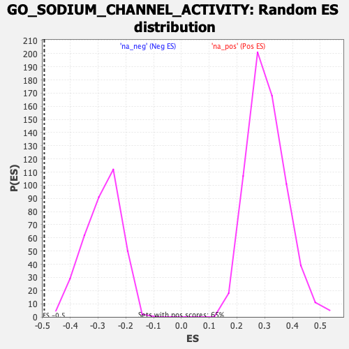

| | | Dataset | PFS |
| Phenotype | NoPhenotypeAvailable |
| Upregulated in class | na_neg |
| GeneSet | GO_SODIUM_CHANNEL_ACTIVITY |
| Enrichment Score (ES) | -0.49347737 |
| Normalized Enrichment Score (NES) | -1.7359737 |
| Nominal p-value | 0.0 |
| FDR q-value | 0.5903606 |
| FWER p-Value | 1.0 |
Table: GSEA Results Summary
 Fig 1: Enrichment plot: GO_SODIUM_CHANNEL_ACTIVITY
Fig 1: Enrichment plot: GO_SODIUM_CHANNEL_ACTIVITY
Profile of the Running ES Score & Positions of GeneSet Members on the Rank Ordered List
| SYMBOL | RANK IN GENE LIST | RANK METRIC SCORE | RUNNING ES | CORE ENRICHMENT | | 1 | SCN9A | 2458 | 1.656 | -0.0950 | No |
| 2 | NALCN | 2923 | 1.473 | -0.0911 | No |
| 3 | PKD2L1 | 3391 | 1.325 | -0.0902 | No |
| 4 | TRPM2 | 4254 | 1.084 | -0.1140 | No |
| 5 | SCN10A | 4566 | 1.006 | -0.1110 | No |
| 6 | HCN3 | 4741 | 0.970 | -0.1017 | No |
| 7 | HCN1 | 4863 | 0.943 | -0.0902 | No |
| 8 | CACNA1G | 5312 | 0.855 | -0.0971 | No |
| 9 | SCN7A | 5575 | 0.801 | -0.0955 | No |
| 10 | HCN4 | 5867 | 0.750 | -0.0963 | No |
| 11 | ASIC3 | 5884 | 0.747 | -0.0831 | No |
| 12 | TPCN1 | 6742 | 0.595 | -0.1159 | No |
| 13 | SCN1A | 8825 | 0.276 | -0.2176 | No |
| 14 | SCN3A | 9615 | 0.159 | -0.2551 | No |
| 15 | SCN4A | 9744 | 0.141 | -0.2590 | No |
| 16 | SCNN1D | 10234 | 0.070 | -0.2828 | No |
| 17 | SCN11A | 10361 | 0.053 | -0.2882 | No |
| 18 | SLC4A11 | 11682 | -0.133 | -0.3535 | No |
| 19 | PKD2 | 11788 | -0.149 | -0.3561 | No |
| 20 | GRIK3 | 11845 | -0.157 | -0.3560 | No |
| 21 | CACNA1I | 13271 | -0.388 | -0.4219 | No |
| 22 | GRIK4 | 13561 | -0.435 | -0.4285 | No |
| 23 | ASIC2 | 13691 | -0.458 | -0.4265 | No |
| 24 | HCN2 | 14182 | -0.551 | -0.4413 | No |
| 25 | ASIC4 | 14762 | -0.667 | -0.4585 | No |
| 26 | SCN4B | 15445 | -0.818 | -0.4781 | Yes |
| 27 | SCN8A | 15584 | -0.857 | -0.4690 | Yes |
| 28 | GRIK1 | 15789 | -0.916 | -0.4623 | Yes |
| 29 | SCN5A | 15829 | -0.926 | -0.4469 | Yes |
| 30 | SCNN1B | 15934 | -0.953 | -0.4342 | Yes |
| 31 | GRIK5 | 16109 | -1.011 | -0.4241 | Yes |
| 32 | KCNK1 | 16188 | -1.033 | -0.4087 | Yes |
| 33 | SCN1B | 16486 | -1.132 | -0.4026 | Yes |
| 34 | GRIK2 | 16989 | -1.322 | -0.4035 | Yes |
| 35 | SCNN1G | 17203 | -1.410 | -0.3879 | Yes |
| 36 | CACNA1H | 17424 | -1.512 | -0.3708 | Yes |
| 37 | SHROOM2 | 17567 | -1.587 | -0.3482 | Yes |
| 38 | SCN3B | 18170 | -1.981 | -0.3418 | Yes |
| 39 | SCN2A | 18201 | -2.005 | -0.3056 | Yes |
| 40 | SCNN1A | 18812 | -2.650 | -0.2871 | Yes |
| 41 | TRPM5 | 19257 | -3.625 | -0.2417 | Yes |
| 42 | ASIC5 | 19360 | -4.239 | -0.1671 | Yes |
| 43 | SCN2B | 19363 | -4.264 | -0.0870 | Yes |
| 44 | ASIC1 | 19437 | -5.061 | 0.0045 | Yes |
Table: GSEA details [plain text format]

Fig 2: GO_SODIUM_CHANNEL_ACTIVITY: Random ES distribution
Gene set null distribution of ES for GO_SODIUM_CHANNEL_ACTIVITY